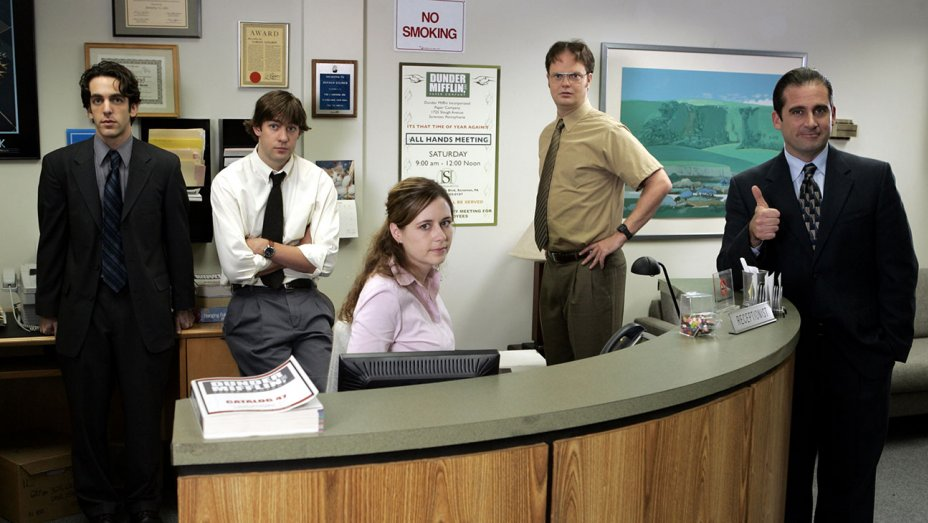

What is The Office?
The series depicts the everyday lives of office employees in the Scranton, Pennsylvania branch of the fictional Dunder Mifflin Paper Company. To simulate the look of an actual documentary, it was filmed in a single-camera setup, without a studio audience or a laugh track.
Characters
- Michael Scott
- Jim Halpert
- Pam Beesly
- Angela Martin
- Dwight Schrute
- Andy Bernard
- Kelly Kapoor
- Kevin Malone
- Ryan Howard
- Stanley Hudson
- Phyllis Vance
- Oscar Martinez
- Toby Flenderson
- Creed Bratton
- Meredith Palmer
- Darryl Philbin